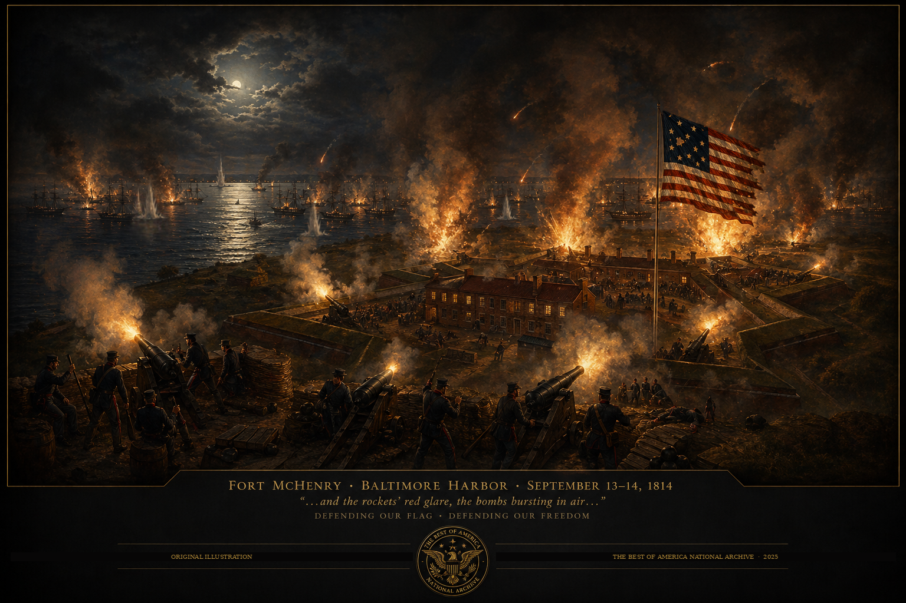

“…and the rockets’ red glare, the bombs bursting in air, gave proof through the night that our flag was still there.” — Francis Scott Key, September 14, 1814
★
Insert aerial or
historic photo
fort-mchenry-aerial.jpg
NPS / Public Domain
Fort McHenry stands at the tip of a narrow peninsula where the Patapsco River meets Baltimore Harbor — a position chosen by military engineers in the 1790s because it commanded every approach to one of the young nation’s most vital ports. Built in the classic European star fort design, its five-pointed earthwork walls were calculated to deflect cannon fire and allow defenders to cover every angle of approach without a single blind spot.
When construction was completed in 1800, the fort was named in honor of James McHenry, Secretary of War under Presidents Washington and Adams — an Irish-born physician and aide-de-camp to General Washington who had signed the Constitution in 1787. The fort was garrisoned through the early years of the republic, its guns pointed outward over the gray waters of the Chesapeake, in readiness for more than a decade before the event that would make it immortal.
By the summer of 1814, the War of 1812 had taken a catastrophic turn for the young United States. British forces under Major General Robert Ross landed in Maryland and marched virtually unopposed to Washington, D.C. On August 24, they put the torch to the Capitol, the White House, and government buildings across the city. President Madison fled. The flames were visible for forty miles. To many observers in Europe and at home, the American experiment appeared to be ending.
Baltimore was next. It was the third-largest city in the nation, a hub of maritime trade and privateering operations that had inflicted serious damage on British commerce throughout the war. The British planned a two-pronged assault: a land advance from the east under General Ross, and a naval bombardment of Fort McHenry from the harbor. If the fort fell, the fleet could sail directly into Baltimore and reduce the city at will. They had every reason to expect it would.
We have little doubt that the reduction of Baltimore will be one of the most brilliant achievements of the British arms.
— London Morning Chronicle · September 1814On the morning of September 13, 1814, a British naval force of nineteen ships — including bomb vessels specially equipped with mortars capable of hurling explosive shells at steep angles — positioned themselves just beyond the range of Fort McHenry’s guns and opened fire. It was a deliberate calculation: the British could pound the fort without risking a single ship in return. Inside, approximately one thousand American defenders under Major George Armistead could do nothing but absorb the bombardment and hold their ground.
The British fired an estimated 1,500 to 1,800 shells, Congreve rockets, and bombs over twenty-five hours. The noise was unlike anything witnesses had ever heard — a continuous thunder that shook buildings miles away and could be felt in the chest of every person within range. The fort was struck repeatedly. Structures inside the walls were damaged. Casualties mounted. But the walls held, and the flag kept flying.
At 3:00 in the morning, the British attempted their decisive move — a flanking force of over a thousand sailors and marines moved under darkness to circle the fort from the rear. American shore batteries and militia units met them and drove them back. The land assault on Baltimore had already stalled when General Ross was shot from his horse and killed at the Battle of North Point. With both thrusts repulsed and the fort still flying its colors at dawn on September 14, the British commanders made the decision that would change history: they withdrew.
Francis Scott Key was a Georgetown attorney who had sailed out to the British fleet under a flag of truce to negotiate the release of a captured American doctor. The British agreed but refused to let Key return to shore — they did not want word of their plans reaching Baltimore’s defenders. Key was held aboard a British vessel, anchored behind the attack fleet, and forced to watch the bombardment from eight miles away.
Through the night of September 13, Key watched the fort through the flashes of exploding shells and the glare of the Congreve rockets — straining to see whether the American flag was still flying. As long as he could see the flag, the fort was holding. When the bombardment finally ceased and the smoke began to clear at dawn on September 14, Key trained his spyglass on the fort. There it was: the great garrison flag, thirty feet by forty-two feet, still flying above the battered walls.
Overcome with emotion, Key began writing on the back of a letter in his pocket. By the time he reached shore he had the rough draft of what would become “The Star-Spangled Banner.” The poem was published in Baltimore newspapers within days, set to the melody of a popular English song, and spread to cities across the nation within weeks. In 1931, more than a century after the battle, Congress officially designated it the national anthem of the United States.
“…and the rockets’ red glare, the bombs bursting in air, gave proof through the night that our flag was still there. O say, does that star-spangled banner yet wave o’er the land of the free and the home of the brave?”
— Francis Scott Key · September 14, 1814 · First published as “Defence of Fort M’Henry”The defense of Fort McHenry did not just repel a British fleet. It turned the tide of the war. The withdrawal from Baltimore — combined with the American victory at Plattsburgh on Lake Champlain one day earlier — shattered the British position at peace negotiations already underway in Ghent, Belgium. The Treaty of Ghent, signed December 24, 1814, restored prewar boundaries and acknowledged what September had made plain: the United States was not going to collapse. It was going to endure.
Fort McHenry served the republic through the Civil War as a Union prison, through decades as an active military installation, and was designated a National Park in 1925. In 1939 it received the designation it holds uniquely to this day — the only site in the entire National Park System to bear the dual title of National Monument and Historic Shrine. More than 650,000 visitors come annually. Rangers still raise and lower the replica garrison flag by hand each day.
The walls still stand. The flag still flies. And the words that Francis Scott Key wrote aboard a British ship, watching through the smoke and fire, still open every baseball game, every graduation ceremony, every moment when the nation gathers and reminds itself what it is. That is why Fort McHenry belongs in this archive. Not because of what happened in twenty-five hours on September 13–14, 1814 — but because of what it has meant to every American in the two centuries since.
“Fort McHenry is entered into the permanent record of The Best of America National Archive in recognition of the garrison that refused to surrender, the flag that refused to fall, and the words that gave a nation its voice. As long as this archive endures, so will this record.”